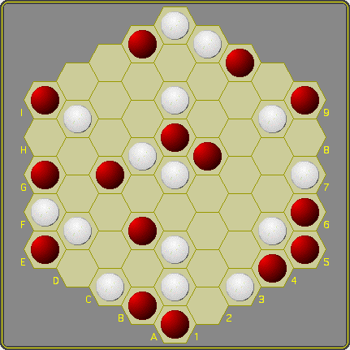

|  | The hero’s self awareness was penetrated by someone else’s consciousness of him, the hero’s own self utterance was injected with someone else’s words about himMultiplicity is an inverted connection game in in which connections often are to be avoided. It can be played using the one-bound-one-free opening protocol, but also without it. Play Multiplicity interactively Rules There are two players, White and Red. Each has a sufficient number of stones and both move only with their own color. A 'group' is a number of connected like-colored stones. A single stone is a group by definition. The game starts on an empty hexhex board. White moves first, after which turns alternate. Moving is compulsory. The one-bound-one-free opening protocol White starts by placing one stone on the empty board. From that point on players take turns to:
|
Both placements are compulsory. When the player to move can no longer make the second placement, then his turn ends and his opponent may start the free placement phase. The number of white and black stones will always be equal, although the 'density' of the position may vary and either player may end up being the one to start the next phase.
The free placement phase
In the category of I, my exterior is incapable of being experienced as a value that encompasses and consummates me. It is only in the category of the other that it is thus experienced, and I have to subsume myself under this category of the other in order to be able to see myself as a constituent in the unitary pictorial-plastic external world
Object
The game ends when the board has precisely one vacant cell left so that players will have placed the same number of stones, and the player with the highest score wins. A player's score is the product of the sizes of all his groups. The applet keeps track of the score.
Draws
Though draws will be very far from common, the game may end with an equal score.
Things will be as we have decided they are to be.
Multiplicity © MindSports